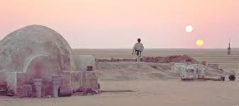
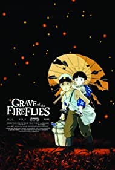

Burak Kiraz
Hakkımda
Merhaba. Ben Burak Kiraz. Bursa'da yaşıyorum. Film izlemeyi çok severim. En sevdiğim film türü bilim kurgudur. Star wars'a bayılırım. Bu kodluyoruz eğitim serisinde web geliştirmeyle alakalı bir sürü şey öğreneceğim için çok heyecanlıyım.
İlgi Alanlarım
En Sevdiğim Filmler
Star wars

Bu filmde en sevdiğim olaylardan beri Luke'un baştan sona kadar karakter gelişimiydi.Sürekli verilen mesaj umut ve bu mesajı çok güzel bir şekilde veriyor. Ne zaman umutsuz olsam binary sunset müziğini açıp umutlu olmaya çalışırım.
İMDB Puanı
Hotaru No Haka

Bu film benim en çok ağladığım filmdir.Filmin konusu iki kardeş savaş alanında hayatta kalmaya çalışmasıdır. Basit bir konusu olsa da iki kardeşin yaşadığı olaylar derinden etkiliyor. Savaşın ne kadar berbat bir şey olduğunu bu film göstermiştir. En çok sevdiğim olaylardan biri de ne kadar zorluk yaşasalar da hala hayatta karşı umutlular. Ne zaman müziğini dinlesem ağlayasım gelir.
İMDB Puanı
En Sevdiğim Diziler
Neon Genesis Evangelion

Bu dizi çok kişisel bir dizi. Herkese göre değil.Başlangıç kısmı sıradan gitse de sonlara doğru öyle bir hal alıyor ki kendini sorguluyorsun. Animede bir sürü dini metafor olsa da en çok ilgilendiğim kısım insanların psikolojisi. Shinji ikari'yi izlerken kendimi görüyorum. Bu anime zaten depresif, içe kapanan insanların eleştirisini anlatıyor genel olarak. Bu animede çıkarılacak çok güzel dersler var.
İMDB Puanı
Westworld

HBO yapımlarının ne kadar kaliteli olduğunu gösteren bir dizi. Aşırı ağır ama izledikçe dizi seni ödüllendiriyor. Yapay zeka üzerine yapılmış en gerçekçi eserlerden biri. Sonlardaki plot twist insanı hayli şaşırtıyor. Bu sadece ilk 2 sezon için geçerli 3. sezonu izlemedim.
İMDB Puanı